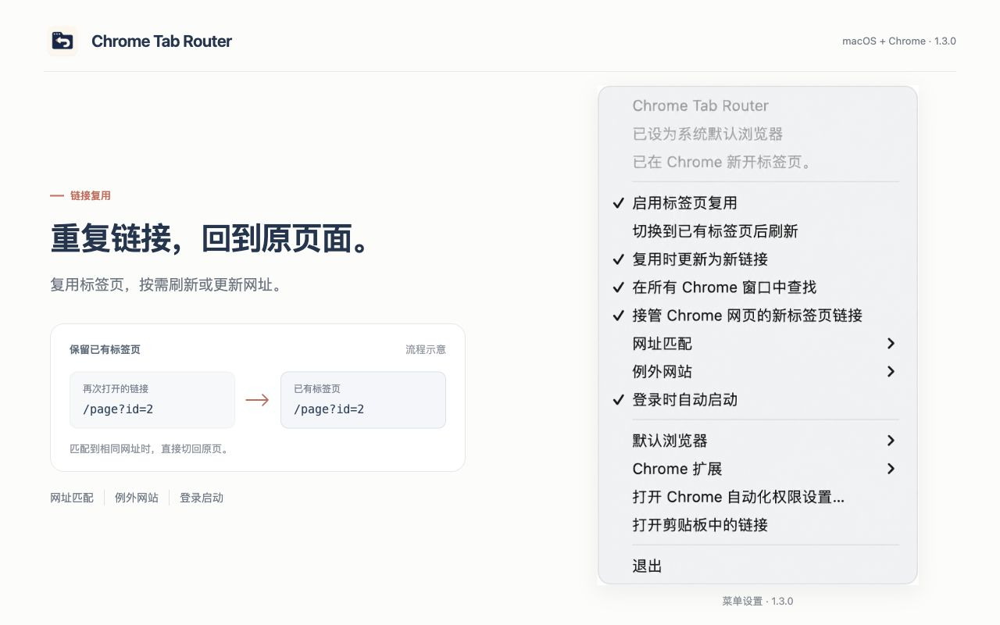
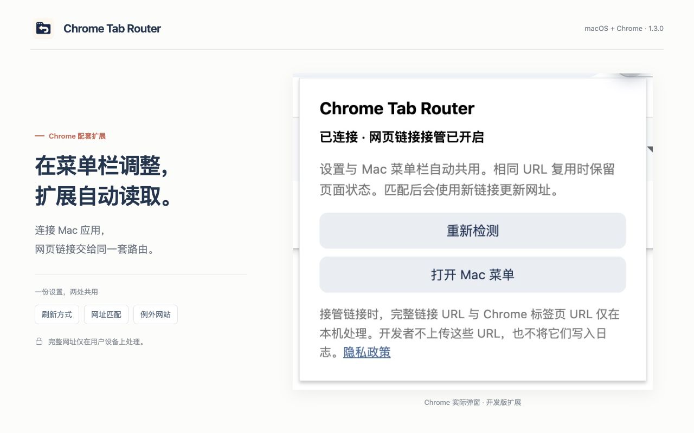

找到已有页面，就回到它
Mac 应用独立查找已有标签页，记录自己打开链接的原始和最终地址。可切换后刷新，也可把原页更新为收到的新网址。
Mac 菜单栏工具 · 1.3.2 预览版
从其他应用打开链接，先找到已有的 Chrome 页面，按设置刷新或更新网址。Mac 应用能独立记住跳转前后的地址，再次打开仍复用原标签页。
Apple 芯片 · macOS 13 或更新版本 · Google Chrome
预览安装包使用临时签名，尚未经过 Apple 公证。首次打开可能需要在系统设置中确认。
每次打开链接，都先找一找
从其他应用打开链接，或在 Chrome 网页中点击新标签页链接，都可以按你的设置处理。
Mac 应用独立查找已有标签页，记录自己打开链接的原始和最终地址。可切换后刷新，也可把原页更新为收到的新网址。
需要保留多个页面的网站可加入例外。域名及其子域名会继续打开新的标签页。

刷新、网址匹配、例外网站、登录启动和默认浏览器，随时可以调整。设置自动保存。
Mac 菜单实际界面，展示图片已提亮。点击图片可查看大图。

网页链接接管读取 Mac 应用中的配置。弹窗可检测本机连接，并快速打开 Mac 菜单。
实际开发版扩展弹窗。Chrome Web Store 1.3.2 已公开，日常使用请优先安装商店版。
设为默认浏览器后，邮件、聊天等应用打开的链接由 App 独立处理。复用、刷新、参数更新、例外网站与暂停都不依赖扩展。
配套扩展接管网页中会新开标签页的点击，并记录浏览器实际经过的重定向地址；所有设置仍在 Mac 菜单栏管理。
开启“忽略所有查询参数”和“复用时更新为新链接”，收到新参数时可更新原标签页。页面锚点和常见跟踪参数也能分别设置。
/page?id=1
/page?id=2
从这里开始
先安装 Mac 应用并设为默认浏览器，即可处理外部链接。需要接管 Chrome 网页内部点击时，再安装配套扩展。
从 Chrome Web Store 安装扩展Chrome Web Store 1.3.2 已公开，可直接安装。扩展 ZIP 侧载仅供开发和测试。
安装商店版扩展 ↗下载 1.3.2 预览版，解压后将 Chrome Tab Router.app 放入 ~/Applications，然后首次打开。
安装包使用临时签名，尚未经过 Apple 公证。如果 macOS 阻止打开，可按 Apple 的说明，在“系统设置 → 隐私与安全性”中确认打开。
点击 Mac 菜单栏中的应用图标，在“默认浏览器”子菜单选择“设为默认浏览器”。之后从其他应用打开的 HTTP/HTTPS 链接会先交给 Chrome Tab Router。
首次路由时，按系统提示允许应用控制 Google Chrome。也可从 Mac 菜单打开 Chrome 自动化权限设置。
在 Chrome 中打开 Chrome Web Store 商店页面，点击“添加至 Chrome”并按提示安装。安装前已打开的网页需要刷新一次。
仅供开发和测试：下载并解压 扩展 ZIP，在 chrome://extensions/ 开启“开发者模式”，选择“加载已解压的扩展程序”并选中包含 manifest.json 的文件夹。也可使用 Mac 菜单“Chrome 扩展 → 打开扩展目录…”中的文件。
打开扩展弹窗，确认显示“已连接”。扩展会自动检测本机连接；若先安装扩展、再安装 App，打开 App 后可在弹窗点击“重新检测”。
若弹窗仍显示未连接，可点击“修复连接”，并在 Chrome 提示时允许打开本机应用；新开发版的连接请求还需在 App 中确认。已连接时可用“重新检测”或“打开 Mac 菜单”。
所有开关、网址匹配规则与例外域名都在 Mac 菜单栏调整，应用与扩展共用同一份本机设置。
安装后试一试
示例页面只显示自己的网址、参数与锚点。你可以直接观察 Chrome 中的结果。
先开启标签页复用、网页链接接管、切换后刷新、复用时更新为新链接和所有窗口查找。在“网址匹配”中开启忽略所有查询参数与页面锚点，例外网站保持为空。下面三个链接都请求打开新标签页。
01 · 基准页面
打开同路径示例页，观察 id=1 与 #first，作为已有标签页。
02 · 同路径，新参数
返回本页再点击。预期切回原页，网址更新为 id=2 与 #second，标签页总数不增加。
03 · 不同路径
确保尚未打开 other.html。点击这个不同路径的示例，预期新开一个标签页。
第二个链接也可用 Command 点击或鼠标中键验证。关闭网页链接接管，或将本页所在域名加入例外后，这些链接会由 Chrome 正常新开。示例页面不读取 Chrome 标签列表或 App 连接状态。
可以。设为默认浏览器后，Mac 应用独立接收外部链接、查找与复用标签页，并记录自己打开链接的原始和最终地址。Chrome 网页里的新标签页点击需要扩展接管；扩展还补充完整的重定向记录，两者共用 Mac 菜单栏设置。
可以。App 记录自己打开链接的原始和最终网址，扩展记录当前页面实际经过的跳转地址。再次打开已记录的地址，会按设置复用同一个标签页。普通页面跳转和关闭标签页会清理旧记录；启用记录前已打开的页面需要重新经过一次跳转才能学习。App 独立运行时不保证捕获快速经过的所有中间地址。
默认按完整网址匹配。只有你开启相应选项后，才会忽略锚点、常见跟踪参数或全部查询参数；域名和路径仍参与比较。对参数决定内容、需要同时保留多个页面的网站，可以保留完整匹配或加入例外。是否用收到的新网址更新原页，也有单独的开关。
支持 HTTP/HTTPS 网页中指向新标签页的链接、Command 点击与鼠标中键点击。普通的当前页面导航、地址栏、书签、右键菜单、表单和脚本调用 window.open() 不在接管范围内。Chrome 内部页面与 Chrome Web Store 等受保护页面也不支持。
先确认 Mac 应用已经打开，在扩展弹窗重新检测。仍未连接时，点击“修复连接”，允许打开本机应用，并在 App 中确认新的开发版连接请求。之后重新检测；已连接时，弹窗会提供“重新检测”和“打开 Mac 菜单”。菜单中的最近连接记录仅表示上一次本机通信时间。
可以，Chrome Web Store 1.3.2 已公开，可从商店页面直接安装。请先安装并打开 Mac 应用，应用会自动配置正式扩展 ID 的本机连接。扩展 ZIP 侧载仅供开发和测试。
当前提供 Apple 芯片 Mac 的安装包，需要 macOS 13 或更新版本和 Google Chrome。1.3.0 为预览版，使用临时签名，尚未经过 Apple 公证。Intel Mac、Windows 与其他浏览器暂无发布安装包。
在 Mac 菜单中关闭标签页复用或网页链接接管即可暂停对应功能。“默认浏览器”子菜单可恢复原来的默认浏览器；“例外网站”可让指定域名及其子域名每次新开。卸载前可关闭登录启动、恢复默认浏览器，然后退出并删除应用和扩展。
目标链接和已有标签页的网址用于本机查找与复用。应用不会把网址、设置或操作日志上传给开发者，也不建立浏览网址历史。
Chrome Tab Router 1.3.0 预览版 · Apple 芯片 · macOS 13+